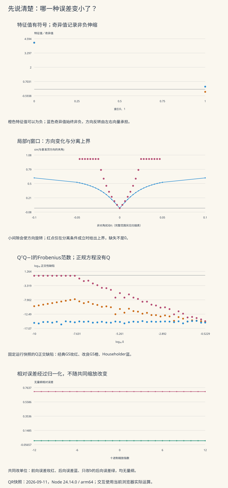

本页目录
数值线代 I · SVD、QR与后向稳定性
本页问题：一个程序把残差算得很小，为什么答案仍可能错得很大？另一个程序给出不同的奇异向量，又为什么可能完全正确？
前置：矩阵乘法、正交投影、向量与矩阵范数、浮点舍入。先跟着两个坐标的伸缩算清楚，再对同一个小矩阵实际执行四种最小二乘方法。
学习层：先说清楚“小”的究竟是哪一种误差
两个方向的测量灵敏度相差一亿倍，同样的读数误差不会产生同样的答案误差
设仪器读取 \(y_1=x_1\)，却只读取 \(y_2=10^{-8}x_2\)。第二个读数偏移 \(10^{-8}\)，就可以对应源变量偏移1。把残差写成很多个零，并没有改变这种分辨能力。
SVD找到这些不同的伸缩方向；QR帮助我们在计算中保留信息；后向误差则追问：这个候选答案究竟精确解决了哪个附近的输入问题？它们相互联系，却不是同一个判断。
| 实验 | 亲自改变什么 | 分开观察什么 |
|---|---|---|
| SVD与低秩 | 间隙和非对角扰动，包含不定矩阵与重根 | 特征值的符号、奇异值、单根方向和低秩残差 |
| QR与最小二乘 | 小尺度、正交残差和列空间扰动 | 算法前向误差、正交性、重建误差与最优拟合残差 |
| 后向误差 | 候选解的偏移方向与共同缩放 | 原始残差、归一化后向误差和前向误差 |
无JavaScript也能核对。 默认SVD实验从对角元3和1开始，在两个非对角位置各加0.05；表内同时列出另外两种模式的指定参考：QR取δ=0.0001、ρ=ε=0；后向误差例取δ=0.00000001、弱方向偏移1、共同缩放1。
| 量 | 参考数值 |
|---|---|
| 大特征值λ+ | 3.00124921973 |
| 小特征值λ− | 0.998750780275 |
| 奇异值σ1 | 3.00124921973 |
| 奇异值σ2 | 0.998750780275 |
| 相对于唯一基准方向的夹角（弧度） | 0.024979197861 |
| sinθ的分离条件上界 | 0.025641025641 |
| 秩1的谱范数尾项 | 0.998750780275 |
| 秩0的Frobenius尾项 | 3.16306813079 |
| QR问题κ₂(A) | 17320.5081046 |
| 经典GS相对实际输入的前向误差 | 3.20273176316e-09 |
| 改良GS相对实际输入的前向误差 | 5.54729366578e-09 |
| Householder相对实际输入的前向误差 | 7.47513527992e-16 |
| 正规方程相对实际输入的前向误差 | 1.81298660735e-16 |
| 经典GS正交缺陷 | 3.2027314666e-09 |
| 改良GS正交缺陷 | 4.52934760803e-13 |
| Householder正交缺陷 | 1.84611094788e-15 |
| 指定候选解的相对后向误差 | 3.09016994375e-09 |
| 指定候选解的相对前向误差 | 0.707106781187 |
负特征值不会变成负奇异值。表内QR数值与下方QR静态图使用2026-09-11的Node 24.14.0 / macOS arm64运行快照；下载原始矩阵、向量与逐点记录可独立核对。交互在当前浏览器实际计算，舍入误差的末位、接近机器精度的误差值可能不同。有理参考针对已经形成的浮点输入，理想数据的答案另列。后向误差实验直接指定候选解，不能据此断言某个求解器实际产生了它。

图点和完整表格一一对应。方向图使用标注的局部η窗口，并在基准间隙附近增加采样，让小间隙的变化能看清；Weyl图与扫描表保留整个−4到4范围。对数图仅绘制严格正的量；真实0与算法失败分别保留在表格中，不用一个很小的正数替代它们。
1. SVD把矩阵的作用拆成正交变换与非负伸缩
对实矩阵 \(A\in\mathbb R^{m\times n}\)，完整SVD写成
\(\Sigma\) 是矩形对角矩阵，其非零对角元按 \(\sigma_1\ge\cdots\ge\sigma_r>0\) 排列，其余为0。先由 \(V^T\) 换到输入的正交坐标，沿这些坐标伸缩，再由 \(U\) 换到输出坐标。正交变换既可以含旋转，也可以含反射；不是所有正交矩阵都是旋转矩阵。
每个对应方向满足
奇异值是长度比例，始终非负。对满列秩矩阵，最小二乘的矩阵条件数为
若最小奇异值为0，线性映射有真正的零空间。精确秩仍是数学概念；工程计算还会根据数据误差、单位和使用目的选择阈值，定义某一种数值秩。数值秩带阈值，不等于“浮点数中不可能出现精确零”。
2. 实对称矩阵也不能把特征值直接当作奇异值
实验使用
它的特征值为
由于迹 \(3+b>0\)，\(\lambda_+>0\) 且 \(\lambda_+\ge|\lambda_-|\)。所以奇异值为 \(\lambda_+\) 与 \(|\lambda_-|\)。
若 \(\lambda_-\lt0\)，对应右奇异向量仍可取单位特征向量 \(v_-\)，左奇异向量则取 \(-v_-\)，从而
方向反转由左右向量的关系承担。实验允许跨过正定边界，明确显示有符号的特征值与非负奇异值。计算小特征值时采用
避免用两个接近的大数直接相减。不过行列式本身接近0时仍会有舍入误差；这不是严格区间算法。预设 \(b=3,\eta=3\) 可直接核对精确秩一矩阵。
3. 奇异值的稳定性不需要谱隙
对同形矩阵 \(A\) 与扰动 \(E\)，有
一种读法是：对每个单位向量，三角不等式给出 \(\|(A+E)v\|\le\|Av\|+\|E\|_2\)；把它代入奇异值的最小最大刻画，就得到一个方向的不等式，再交换 \(A\) 与 \(A+E\) 得到另一方向。
这里控制的是绝对位移。如果真实奇异值很小，即使绝对误差达到机器精度乘 \(\|A\|\) 的尺度，它的相对误差仍可能很大。LAPACK的SVD误差说明也将一般稠密矩阵的绝对精度与某些特殊双对角算法的高相对精度区分开来。
实验中 \(E\) 的非零项为 \(E_{12}=E_{21}=\eta\)，所以 \(\|E\|_2=|\eta|\)。完整扫描同时展示实际奇异值位移与这个上界，不只比较三个挑选过的例子。
4. 向量为什么需要间隙，重根为什么要谈子空间
先设 \(b\lt3\)，因此基准矩阵 \(\operatorname{diag}(3,b)\) 的顶方向唯一到正负号。选择与第一坐标夹角不超过直角的扰动后顶方向，有
实验报告无符号夹角 \(|\theta|\)。当间隙 \(g=3-b\) 很小时，同样的 \(\eta\) 可以带来明显旋转，而奇异值仍满足上一节的界。
令顶单位向量为 \((c,s)^T\)。从特征方程第二行得到
在本例中 \(\lambda_+\ge3\)，故可直接得到 \(|s|\le|\eta|/g\)。实验另列一个更保守的分离式上界：当 \(g-|\eta|>0\) 时，
条件不成立时，这项证书留空；不能把“这个上界不可用”理解为“实际角度不存在”。它是本例的可核查界，一般左右奇异子空间需要相应的分离条件与残差分析。
若 \(b=3\)，基准矩阵是 \(3I\)，任何单位方向都可选作第一奇异向量。此时“相对那个唯一基准顶向量的夹角”没有定义，实验不会填一个假的0。完整二维子空间却始终清楚。一般情形下，一簇接近的奇异值可以对应稳定的子空间，即使簇内每一根基向量都很敏感；判断子空间要看它与簇外谱的分离。
5. 最佳低秩逼近：哪一种尾部范数对应哪一种误差
保留前 \(k\) 个奇异方向：
则
谱范数只看最坏的剩余方向；Frobenius范数汇总全部剩余方向。它们分别是秩不超过 \(k\) 的矩阵在对应范数下可达到的最小误差。秩一近似 \(2\times2\) 矩阵时只剩一个尾项，所以两者恰好相等；不能把这项巧合推广到任意矩阵。
对 \(1000\times1000\) 矩阵保存50项SVD，一般需要 \(50(1000+1000+1)=100050\) 个标量，约为原始一百万个数的10.005%；实际文件还可能有格式与索引开销。如果原矩阵精确秩就是50，截断误差为0；若只是近似低秩，才由第51及之后的奇异值决定误差。
最佳矩阵逼近不自动保证下游分类或物理预测最好，因为后者可能采用不同的损失、权重或约束。
6. 亲自执行QR，而不只记住“它比较稳定”
对满列秩 \(A\in\mathbb R^{m\times n}\)，\(m\ge n\)，薄QR分解为
其中 \(R\) 为可逆上三角矩阵。将 \(b\) 分成列空间与其正交补两部分：
所以最优解满足 \(Rx=Q^Tb\)。第二项与 \(x\) 无关；稳定求解不会把本来不在列空间里的数据强行变成可精确拟合的数据。
经典Gram–Schmidt在消去第 \(j\) 列时，先用原始列计算各个投影系数；改良版每次使用已经减去前面投影的剩余列。精确算术下二者等价，浮点算术中的舍入路径不同。
Householder方法构造
对待消去列片段 \(z\)，选择 \(\alpha=-\operatorname{sign}(z_1)\|z\|\)，取 \(v=(z-\alpha e_1)/\|z-\alpha e_1\|\)；\(z_1=0\) 时选定一个一致符号。这样避免首分量出现不必要的相消，并有 \(Hz=\alpha e_1\)。
正交变换保持范数，有利于控制误差传播，但浮点计算出的反射仍有局部误差。严格后向稳定性结论还需逐步舍入分析和维数因子；不能只凭“精确的正交矩阵条件数为1”就声称计算完全不产生误差。
7. 四种算法，必须面对同一个实际输入
实验采用Läuchli型矩阵
由
可知其奇异值为 \(\sqrt{3+\delta^2},\delta,\delta\)。真实矩阵始终满列秩；当 \(\delta^2\) 比1附近的浮点间距更小时，形成正规矩阵可能把重要差别舍掉。
构造理想右端
\(A_\delta^Tn=0\)，所以 \(\rho\) 控制理想最优残差；\(w\) 位于列空间，\(\varepsilon\) 沿弱方向改变答案。理想数据的最小二乘解为
程序在形成 \(b\) 时也会舍入。为避免将这项误差错算给求解器，实验将实际binary64的 \(\delta,b\) 精确解释为有理数，再使用闭式
分子、分母完整列出；最终图表转换回浮点数显示，所以不声称图上的小数就是完整精确分数。四个实际算法都与同一个实际输入的有理参考比较，理想模型解另列。
经典GS、改良GS、Householder QR与正规方程Cholesky均实际运行。正规矩阵出现非正主元时，实验明确报告失败，不暗中加正则化，也不据此把原始 \(A_\delta\) 判成秩亏。
8. QR后向稳定，不意味着一般最小二乘只有κ倍敏感性
算法的后向稳定性问的是：计算结果是否精确最小化某个邻近问题
且 \(\|E\|/\|A\|\)、\(\|f\|/\|b\|\) 在机器精度乘适当维数因子的尺度上。它没有要求原问题的最优残差为0。
更容易忽略的是，最小二乘问题本身对 \(A\) 的敏感性还与最优残差有关。令 \(r=b-Ax\)，精确最优性是 \(A^Tr=0\)。一阶扰动得到
最后一项含逆正规矩阵。若 \(r\) 不小，问题的敏感性本来就可能带有条件数平方的贡献，不能把它全部归罪于“算法求了正规方程”。LAPACK的最小二乘误差说明以残差与数据的夹角表述这一差别。
QR避免显式形成正规矩阵所引入的额外信息损失，仍不能消除输入问题的内在敏感性。因此“条件数一百万，QR必然有某个固定有效位数”不是普遍保证；输入方向、残差、维数和实际实现都要交代。
实验将四个量分别报告：\(\|QR-A\|_F/\|A\|_F\)、\(\|Q^TQ-I\|_F\)、最小二乘拟合残差以及相对参考解的前向误差。它们可以帮助发现问题，但有限几个数值例子不能证明一个算法对所有输入后向稳定。
9. 方程的最小相对后向误差可以直接构造
现在讨论可逆方阵的方程 \(Ax=b\)，给定候选 \(\widehat x\)，令
如果允许同时扰动 \(A,b\)，并用相同相对幅度衡量二者，则最小后向误差是
若只允许改右端，则为 \(\eta_b=\|r\|_2/\|b\|_2\)。分母不同，因为允许改变的输入不同。这里假定相应分母非零；本实验的输入满足这一条件。
当 \(r\ne0\)、\(\widehat x\ne0\)，令 \(u=r/\|r\|\)、\(v=\widehat x/\|\widehat x\|\)，取
便有 \((A+\Delta A)\widehat x=b+\Delta b\)， 且两个相对扰动范数都等于 \(\eta_{A,b}\)。实验逐项展示这个构造及其浮点核对残差，而不只给出一个后向误差数字。
若 \(\kappa_2(A)\eta_{A,b}\lt1\)，一个一般上界为
它可能很宽。条件不成立时，此上界留空，并不表示真实前向误差无限大。方程的这套残差公式也不能直接当作一般超定最小二乘算法的最小后向误差公式。
10. 截断、岭正则化和数值秩不是同一种选择
在SVD坐标中，直接最小二乘使用增益 \(1/\sigma_i\)。截断SVD把阈值以下方向的增益置零，其余仍取 \(1/\sigma_i\)；岭正则化
则使用连续增益
两者都可以减少小奇异值的噪声放大，但它们的滤波形状、偏差和参数解释不同。换成一般的平滑惩罚矩阵时，惩罚与 \(A^TA\) 也未必能同时对角化。
在物理逆问题实验里，可以继续区分数据分辨率、先验、参数后验区间与固定真值的重复实验风险。求解器更稳定，不等于模型假设更正确。
11. 四道迁移题与完整答案
题一。 对 \(B=\begin{pmatrix}3&2\\2&1\end{pmatrix}\)，求特征值、奇异值与最佳秩一近似的谱范数误差。为什么不能把小特征值直接画成奇异值？
答案：把方向符号留给奇异向量
特征多项式为 \(\lambda^2-4\lambda-1\)，所以特征值为 \(2+\sqrt5\) 与 \(2-\sqrt5\)。第二个为负；两个奇异值是
设 \(v_-\) 是负特征值的单位特征向量，则左奇异向量取 \(u_-=-v_-\)，从而 \(Bv_-=(\sqrt5-2)u_-\)。最佳秩一近似的谱范数误差为 \(\sqrt5-2\)，也是此处的Frobenius误差，因为仅剩一个尾项。
题二。 对任意秩不超过 \(k\) 的 \(C\)，证明 \(\|A-C\|_2\ge\sigma_{k+1}\)。如果 \(\sigma_k=\sigma_{k+1}\)，最佳逼近是否一定唯一？
答案：核空间里总有一个保不住的方向
设 \(S=\operatorname{span}(v_1,\ldots,v_{k+1})\)。由于 \(\dim S=k+1\)、\(\dim\ker C\ge n-k\)， 二者在 \(\mathbb R^n\) 中必有非零交点。取交点上的单位向量 \(w\)，则
因此算子范数至少为 \(\sigma_{k+1}\)，而截断SVD达到这个值。等奇异值可以使最优解不唯一：对 \(A=I_2\)、\(k=1\)，任取单位向量 \(v\)，矩阵 \(vv^T\) 都给出谱残差与Frobenius残差1。算法挑选某个 \(v\)，没有为它创造数学上的唯一性。
题三。 证明上一节的 \(\eta_{A,b}\) 真的是允许同时相对扰动 \(A,b\) 的最小值，而不仅是一个可行值。共同缩放 \(A,b\) 后它如何变化？
答案：先证下界，再构造达到它的扰动
若 \((A+\Delta A)\widehat x=b+\Delta b\)，则 \(r=\Delta A\widehat x-\Delta b\)。设 \(\|\Delta A\|\le t\|A\|\)、\(\|\Delta b\|\le t\|b\|\)，三角不等式给出
所以 \(t\ge\eta_{A,b}\)。第9节的秩一构造达到这个下界，故它就是最小值；\(r=0\) 时取零扰动。
将 \(A,b\) 同时乘非零标量 \(c\)，残差范数与分母都乘 \(|c|\)，所以 \(\eta_{A,b}\) 不变。候选解和真实解也不变；原始残差却可以因为单位选择而变得很大或很小。
题四。 从最小二乘最优性推导第8节的一阶扰动式。哪个项说明非零残差为什么需要额外小心？
答案：矩阵改变还会旋转可拟合的列空间
设 \(A\) 满列秩，\(r=b-Ax\) 且 \(A^Tr=0\)。扰动后的最优性为
只保留一阶项，去掉 \(A^Tr\)，得到
乘以可逆的 \(A^TA\) 的逆，即
\(E\) 不仅改变已有列空间中的伸缩，还会改变列空间方向；原来的正交残差于是可以进入可拟合方向。最后一项在 \(r=0\) 时消失，在非零残差和病态矩阵下可能被放大。这是问题的敏感性，一阶式还要求扰动足够小并保持满列秩，不能用于跨越秩变化的有限扰动。
12. 把误差账本带进下一次真实计算
先固定实际输入和问题：解方程、做最小二乘，还是求低秩近似？再写清允许改变的输入、范数、缩放与阈值。用已知解的小矩阵和独立参考检查实现，然后分别查看前向误差、后向证据、正交性与数据拟合残差；不要用其中一列替代其余各列。
遇到非常小的奇异值时，先判断它代表真实零空间、数据不足、单位缩放，还是算法丢失了信息。截断或正则化是一项需要解释的建模选择，不应隐藏在“程序终于返回了一个数”的背后。
下一页特征值计算将进入迭代方法；也可以在NOAA CO₂数据项目比较QR与独立SVD对固定真实数据的拟合。真实测量的模型误差和外推误差仍需单独验证。